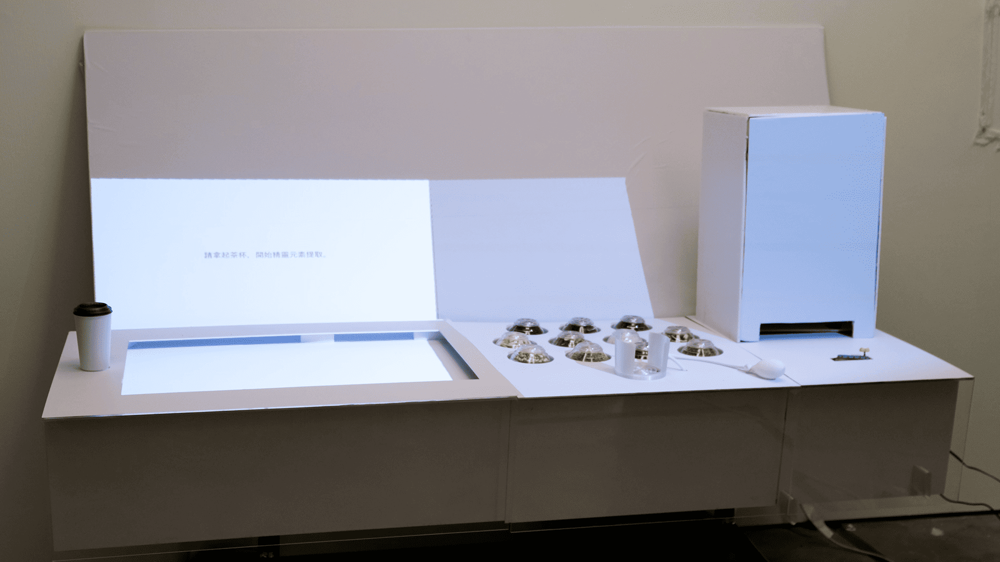

I am Chan Kwok Hin Tony
Tech & Interactive Media Developer
Apps · Games · Interactive Installations · Physical Devices
About Me
Bio
Final-year Creative Media student at City University of Hong Kong,
building at the intersection of software, hardware, and interaction design.
Most developers write code. Most designers make interfaces. I do both —
and when the problem calls for it, I fabricate the physical object too.
My FYP combined custom Arduino hardware, Godot-powered projections, and
9 original IP characters into a single installation. My other work spans
Firebase-backed Android apps and sensor-driven rehabilitation tools.
I work with AI as a force multiplier — not to replace thinking, but to
compress the distance between a problem and a working solution. That means
directing AI with real-world context it cannot source itself: recording
actual motion data to anchor algorithm design, feeding domain knowledge
that has no training set. The goal is always the same — spend less
attention on implementation mechanics, and more on the problem that
actually matters.
Experience
-
BBA Global Business — CityU HK Website UI/UX Designer2023 – 2024
-
Furniture Station Graphic DesignerJun – Sep 2023
-
Echouse Marketing ExecutiveJan – Jul 2023
-
SCM Student Event Team — CityU Visual Design Director2023 – 2024
-
Anything But Limited 不正常研究所 InternshipJuly – July 2025
-
City University of Hong Kong Jockey Club Project IDEA Teaching AssistantOct 2025 – March 2026
My Skills
Development
Hardware & Physical
Design & Creative
My Projects

Tea Sensory Lab
A phygital FYP installation that guides users through a gamified multisensory journey to discover their personalised Tea Spirit.

CityLog
An Android app for leaving and discovering place-bound micro-stories — unlocked only when you're physically nearby.

Frozen Shoulder Home Coach
An Android app that turns your phone into a real-time rehabilitation coach for frozen shoulder — guiding exercises, counting reps, and tracking daily progress.